Fenrir Project - Universal Robotic Platform
This book describes the Fenrir Project develped at the Brno University of Technology, Czech Republic.
Robot is actively used for the Robotics and Computer Vision labs.
Authors
- Ing. Adam Ligocki, Ph.D.
- Ing. Petr Šopák
- Ing. Jakum Minařík
Fenrir Project Overview
The Fenrir Project is an open-source, multi-purpose educational robot designed for a wide range of applications in high schools and universities.
The robot is based on Raspberry Pi 4 and Arduino Nano. The Raspberry Pi provides computational power, ROS2 support, WiFi connection and USB support. The Arduino Nano extends the Raspberry Pi IOs and manages peripherals.
Robot Overview
Visualization - Physical Design
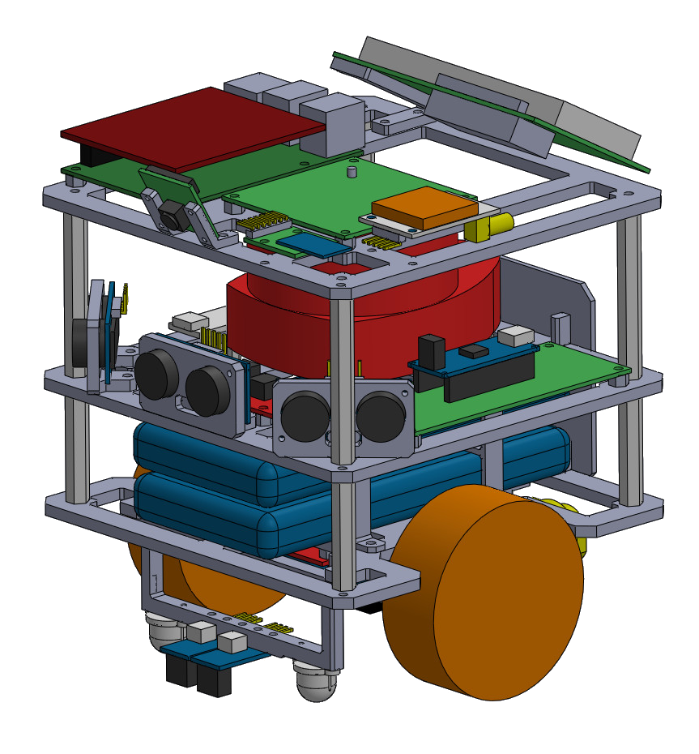
Schematic system Architecture
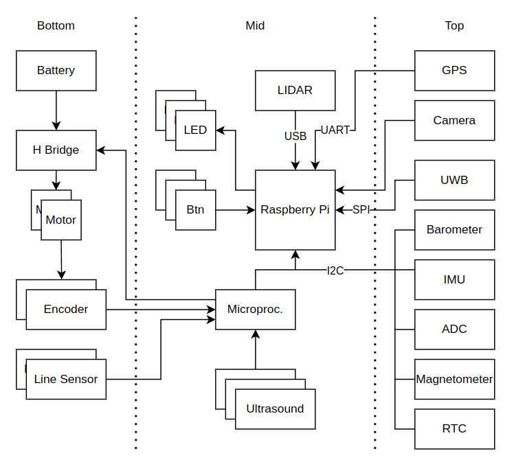
Acknowledgments
This work was created with the support of project RP182401001 under the PPSŘ 2025 program.
Hardware Desing
This section provides a detailed description of all hardware components required to build the robot.
It covers 3D-printed parts, electronic components, integrated modules, and custom-designed PCBs.
3D Printed Components
This chapter presents all parts to be 3D printed.
Recommendations
- Printer: Prusa MK4
- Slicer: Prusa Slicer
- Filament: Prusament PLA or PETG
- Infill: 30%
- Layer height: 0.2mm
- Infill pattern: gyroid
AR Tag Plate - 1x
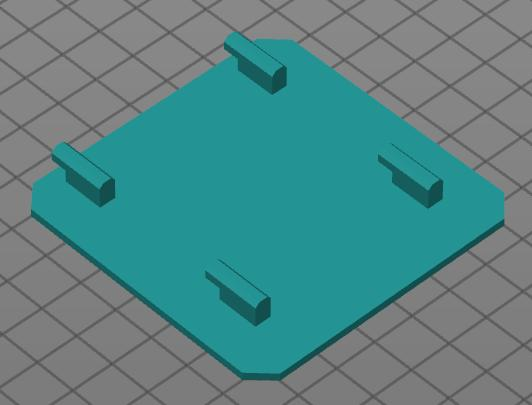
Battery Holder - 2x
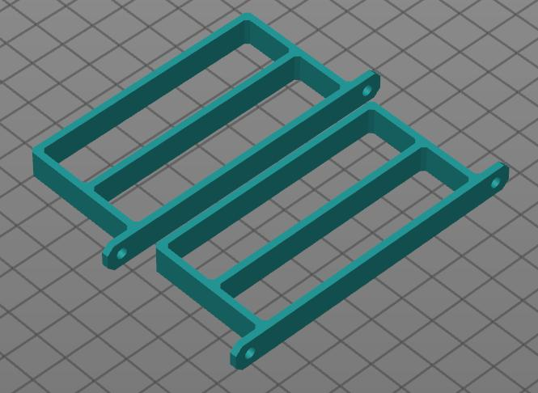
Camera Mounts - 2x
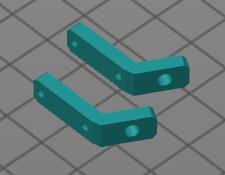
Front Leg - 1x
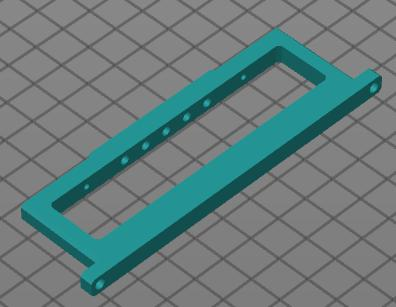
Rear Leg - 1x
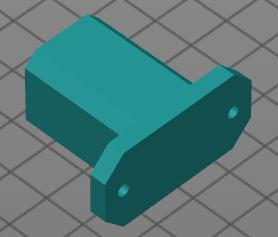
LCD Mount - 1x
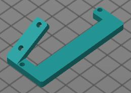
Plate Bottom - 1x
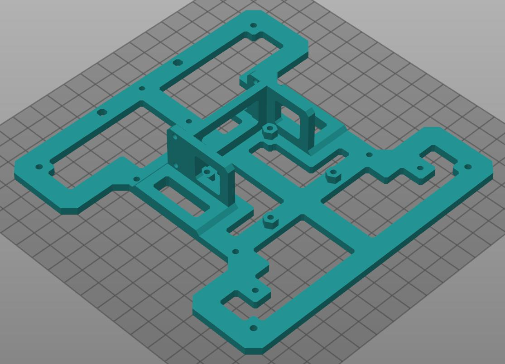
Plate Middle - 1x
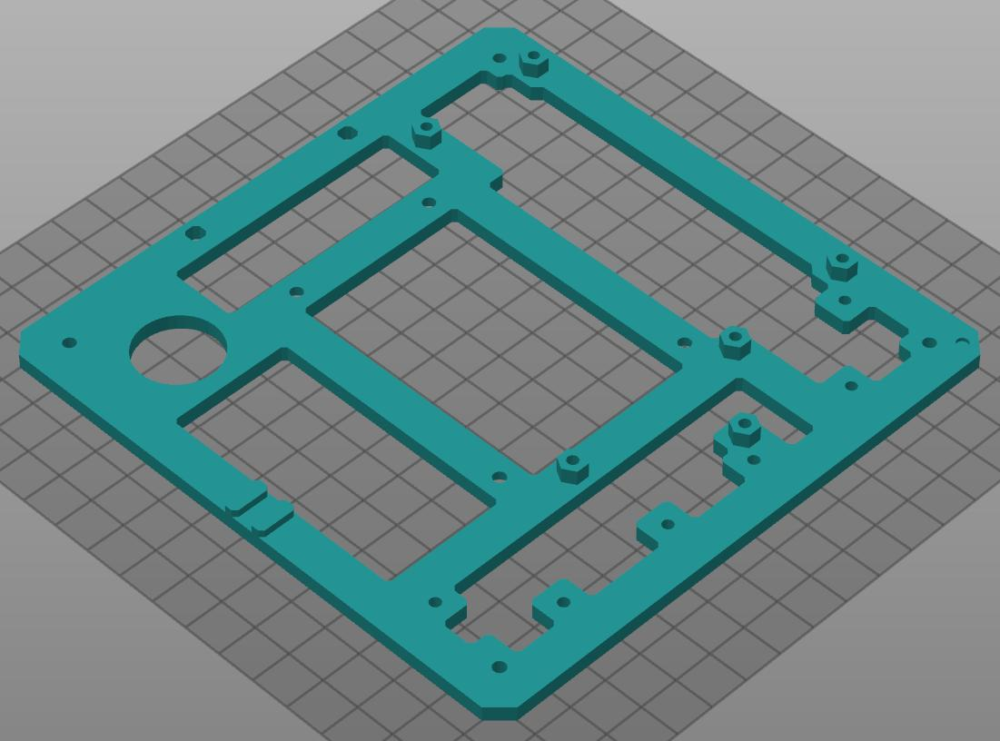
Plate Top - 1x
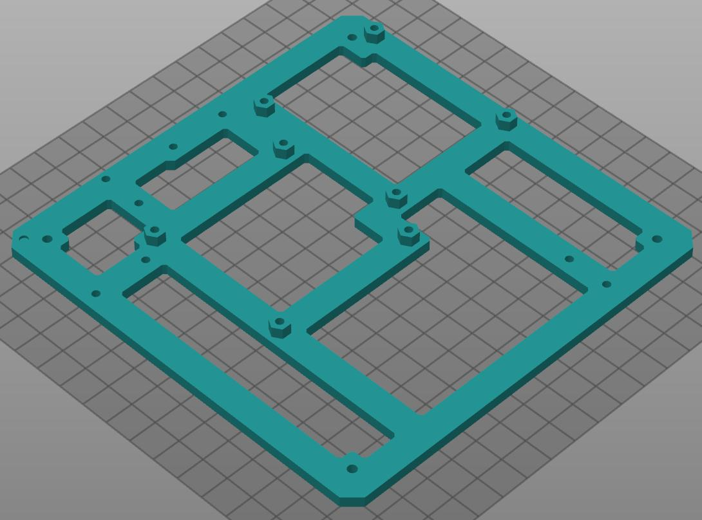
SRF05 Mount - 3x
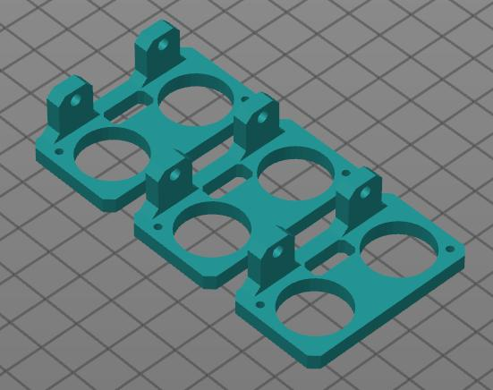
Stand - 1x
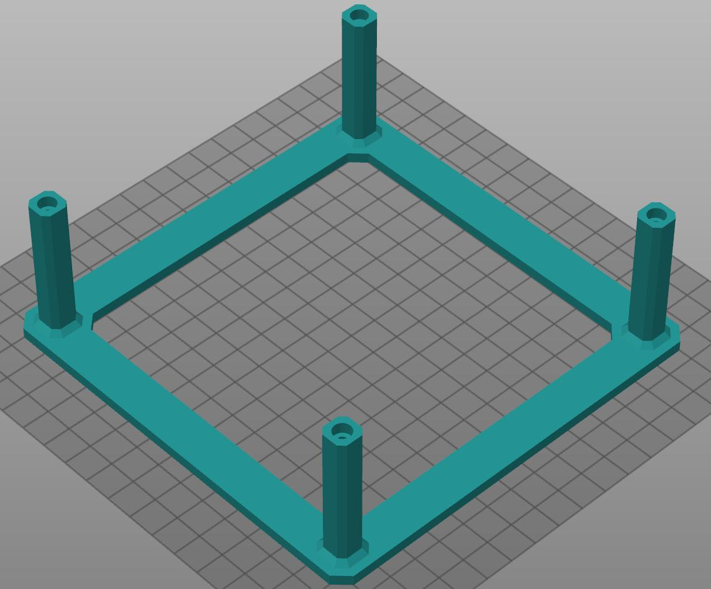
Wheels - 2x
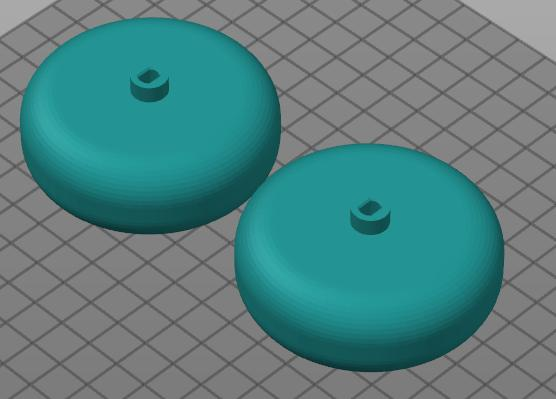
Custom PCBs
This chapter shows the custom PCBs designed for the Fenrir Project.
Robot includes 3 custm PCBs in total with following functionalities:
-
Raspberry Pi Sield (header)
- power supply
- I2C bus
- SPI bus
- UART bus
- Fan cooling
- Buttons
- LEDs
-
I2C Sensor Board
- IMU (Acc + Gyro)
- Barometer
- Magnetometer
- ADC
- RTC
-
Arduino Nano Board
- I2C bus
- Motor Control
- Motor Encoders
- Ultrasonic Sensor
- Line Sensors
Please see the /pcbs folder in the root of the repository for more details.
Raspberry Pi Shield
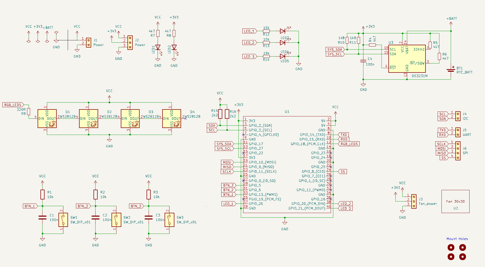
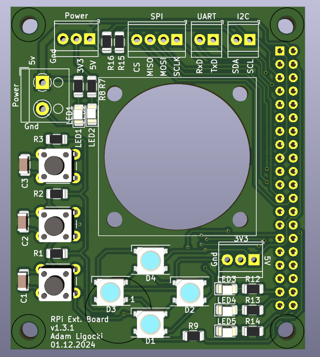
I2C Sensor Board
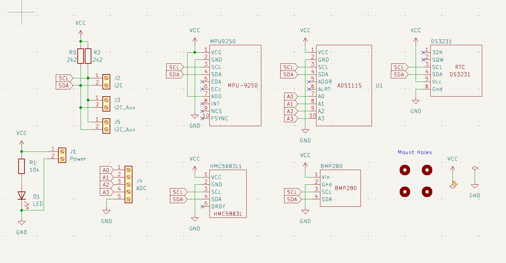
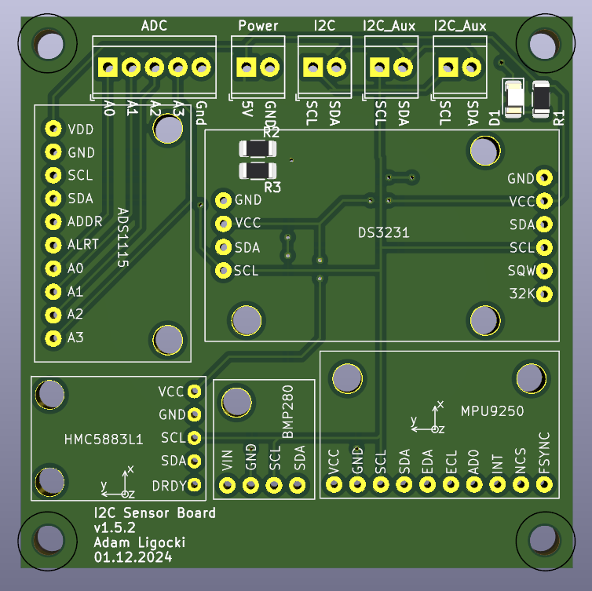
Arduino Nano Every Board
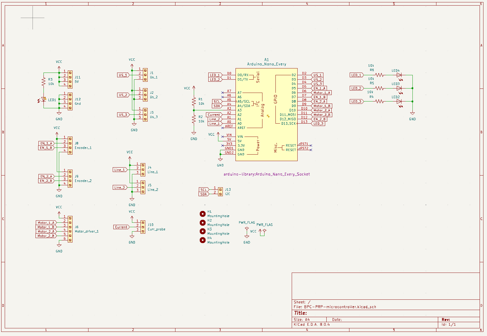
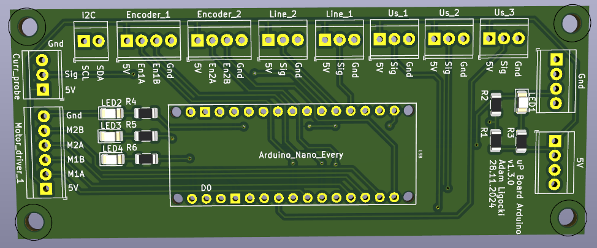
Modules
| Role | Component | URL |
|---|---|---|
| Main Computer | RPi | link |
| Microcontroller | Arduino Nano | link |
| 2x Battery | Powerbank 10000 mAh | link |
| Camera | RPi Camera v2 | link |
| GPS | NEO-7M module | link |
| 2D LiDAR | RPLiDAR A1M8 | link |
| LCD | HD44780 20x4 I2C | link |
| 3x Ultrasound | SRF-05 | link |
| 2x Line Sensor | TCRT5000 module | link |
| H Bridge | L298N module | link |
| Motor with Encoder | DG01D‐E | link |
| IMU | MPU6050 | link |
| Barometer | BME280 | link |
| Real Time Clock | DS3231 | link |
| ADC | ADS1115 | link |
| UWB (not implemented yet) | DWM1000 | link |
| DC/DC Step Up | XL6009 | link |
| Power Delivery | USB-C PD module | link |
Wiring

Note: The sensors numbering goes from left to right
- Ultrasound 1 - left, Ultrasound 2 - center, Ultrasound 3 - right
- Line sensor 1 - left, Line sensor 2 - right
- Motor 1 - left, Motor 2 - right
- Encoder 1 - left, Encoder 2 - right
| Module A | Pin | Module B | Pin | Type | Length | Note |
|---|---|---|---|---|---|---|
| Battery 1 | - | PD Module | - | USB-C - USB-C | 15cm | - |
| Battery 2 | - | Raspberry Pi | - | USB-C - USB-C | 15cm | - |
| Raspberry Pi | - | Camera | - | CSI Cable | 10cm | - |
| Raspberry Pi | 3v3 | GPS | VCC | wire (blue) | 10cm | 3V3 |
| Raspberry Pi | GND | GPS | GND | wire (black) | 10cm | GND |
| Raspberry Pi | Rx | GPS | TxD | wire (purple) | 10cm | UART |
| Raspberry Pi | 5V | I2C Board | 5V | wire (red) | 8cm | 5V |
| Raspberry Pi | GND | I2C Board | GND | wire (black) | 8cm | GND |
| Raspberry Pi | SCL | I2C Board | SCL | wire (yellow) | 8cm | SCL |
| Raspberry Pi | SDA | I2C Board | SDA | wire (green) | 8cm | SDA |
| Raspberry Pi | - | LIDAR | - | USB-A - microUSB | 10cm | - |
| I2C Board | 5V | LCD | VCC | wire (red) | 8cm | 5V |
| I2C Board | GND | LCD | GND | wire (black) | 8cm | GND |
| I2C Board | SCL | LCD | SCL | wire (yellow) | 8cm | SCL |
| I2C Board | SDA | LCD | SDA | wire (green) | 8cm | SDA |
| I2C Board | 5V | Arduino | VCC | wire (red) | 15cm | 5V |
| I2C Board | GND | Arduino | GND | wire (black) | 15cm | GND |
| I2C Board | SCL | Arduino | SCL | wire (yellow) | 15cm | SCL |
| I2C Board | SDA | Arduino | SDA | wire (green) | 15cm | SDA |
| Arduino | US1 | Ultrasound 1 | Vcc | wire (red) | 10cm | 5V |
| Arduino | US1 | Ultrasound 1 | GND | wire (black) | 10cm | GND |
| Arduino | US1 | Ultrasound 1 | Echo/Trig | wire (blue) | 10cm | signal |
| Arduino | US2 | Ultrasound 2 | Vcc | wire (red) | 10cm | 5V |
| Arduino | US2 | Ultrasound 2 | GND | wire (black) | 10cm | GND |
| Arduino | US2 | Ultrasound 2 | Echo/Trig | wire (blue) | 10cm | signal |
| Arduino | US3 | Ultrasound 3 | Vcc | wire (red) | 15cm | 5V |
| Arduino | US3 | Ultrasound 3 | GND | wire (black) | 15cm | GND |
| Arduino | US3 | Ultrasound 3 | Echo/Trig | wire (blue) | 15cm | signal |
| Arduino | Line1 | Line Sens. 1 | VCC | wire (red) | 15cm | 5V |
| Arduino | Line1 | Line Sens. 1 | GND | wire (black) | 15cm | GND |
| Arduino | Line1 | Line Sens. 1 | A0 | wire (blue) | 15cm | signal |
| Arduino | Line2 | Line Sens. 2 | VCC | wire (red) | 15cm | 5V |
| Arduino | Line2 | Line Sens. 2 | GND | wire (black) | 15cm | GND |
| Arduino | Line2 | Line Sens. 2 | A0 | wire (blue) | 15cm | signal |
| Arduino | 5V | Encoder 1 | - | wire (yellow) | 20cm | 5V |
| Arduino | GND | Encoder 1 | - | wire (brown) | 20cm | GND |
| Arduino | EN1A | Encoder 1 | - | wire (red) | 20cm | A |
| Arduino | EN1B | Encoder 1 | - | wire (orange) | 20cm | B |
| Arduino | 5V | Encoder 2 | - | wire (yellow) | 20cm | 5V |
| Arduino | GND | Encoder 2 | - | wire (brown) | 20cm | GND |
| Arduino | EN2A | Encoder 2 | - | wire (red) | 20cm | A |
| Arduino | EN2B | Encoder 2 | - | wire (orange) | 20cm | B |
| Arduino | GND | PD Module | OUT- | wire (black) | - | - |
| Arduino | M1A | H-Bridge | IN3 | wire (yellow) | 20cm | PWM A+ |
| Arduino | M1B | H-Bridge | IN4 | wire (green) | 20cm | PWM A- |
| Arduino | M2A | H-Bridge | IN1 | wire (yellow) | 20cm | PWM B+ |
| Arduino | M2B | H-Bridge | IN2 | wire (green) | 20cm | PWM B- |
| PD Module | + | H-Bridge | +12V | wire (orange) | 15cm | 12V |
| PD Module | - | H-Bridge | GND | wire (black) | 15cm | GND |
| H-Bridge | OUT1+ | Motor 1 | - | wire (green) | 20cm | + |
| H-Bridge | OUT1- | Motor 1 | - | wire (blue) | 20cm | - |
| H-Bridge | OUT2+ | Motor 2 | - | wire (green) | 20cm | + |
| H-Bridge | OUT2- | Motor 2 | - | wire (blue) | 20cm | - |
Bill of Materials
| Role | Quantity | Price pre one | URL |
|---|---|---|---|
| RPi 4 4GB | 1 | 60 EUR | link |
| RPLidar | 1 | 130 EUR | https://rpishop.cz/lidary/1631-rplidar-a1m8-360stupnovy-laserovy-scanner-kit-dosah-12m.html |
| SD Card 32GB | 1 | 12 EUR | https://rpishop.cz/micro-sd/3132-raspberry-pi-32gb-microsdhc-class-10-uhs-i-u1-a1-s-raspberry-pi-os.html |
| RPi Camera v2 | 1 | 18 EUR | https://rpishop.cz/mipi-kamerove-moduly/329-raspberry-pi-kamera-modul-v2.html?_gl=11wsgale_up*MQ..&gclid=CjwKCAiAivGuBhBEEiwAWiFmYYbb2RHjVCyyCdRaEnQOJvI-uUhLYgxhYXZ8skdRQ4tta5Rg_4zGgRoCR6oQAvD_BwE |
| RPi Cooling | 1 | 2 EUR | https://rpishop.cz/pasivni/669-hlinikove-chladice-pro-raspberry-pi.html |
| RPi Fan | 1 | 3 EUR | https://rpishop.cz/aktivni/1644-vetrak-pro-raspberry-pi-30cm-kabel.html |
| DC Motor | 2 | 12 EUR | https://cz.mouser.com/ProductDetail/SparkFun/ROB-16413?qs=vmHwEFxEFR%2F20T1Ah9zr5w%3D%3D |
| Arduino Every | 1 | 15 EUR | https://www.laskakit.cz/arduino-nano-every--original/ |
| Line Sensor | 2 | 1 EUR | https://www.laskakit.cz/arduino-infracerveny-senzor-sledovani-cary-s-lm393/ |
| H-Bridge | 1 | 2 EUR | https://www.laskakit.cz/h-mustek-pro-krokovy-motor-l298n--dualni-motorovy-modul/ |
| MPU6500 | 1 | 3 EUR | https://www.laskakit.cz/arduino-gyroskop-a-akcelerometr-gy-521--mpu6050/ |
| HMC5883L | 1 | 3 EUR | https://www.laskakit.cz/3-osy-magnetometr-a-kompas-hmc5883l/ |
| DC/DC step up | 1 | 2 EUR | https://dratek.cz/arduino/1752-boost-buck-step-up-down-modul-solarniho-napajeni-nastavitelny-dc-dc-xl6009.html |
| SRF05 | 3 | 2 EUR | https://dratek.cz/arduino/1735-meric-vzdalenosti-ultrazvukovy-5pin-hy-srf05-pro-arduino.html |
| RTC | 1 | 4 EUR | https://dratek.cz/arduino/1261-rtc-hodiny-realneho-casu-ds3231-at24c32-iic-pametovy-modul-pro-arduino.html |
| ADS1115 | 1 | 15 EUR | https://dratek.cz/arduino/2955-i2c-ad-prevodnik-ads1115-16-bit-adc-4-kanaly-s-programovatelnym-zesilenim.html |
| BME280 | 1 | 8 EUR | https://dratek.cz/arduino/1361-bme280-modul-mereni-teploty-vlhkosti-a-barometrickeho-tlaku-precizni.html |
| USB PD Module | 1 | 2 EUR | https://www.laskakit.cz/usb-c-pd-qc-prepinac-napajeciho-napeti/?gad_source=1&gclid=CjwKCAjwnK60BhA9EiwAmpHZw1gwgJnPm4Jc0xOTwVau2JMhxzM5kdKtNA8sOKf1myy4h43DM51ymhoCMz8QAvD_BwE |
| LCD | |||
| Screw terminal 2x 5.08 | 5 | 0.3 EUR | https://www.laskakit.cz/sroubovaci-svorkovnice-do-dps-kf301-2p/ |
| Screw terminal 3x 2.54 | 8 | 0.3 EUR | https://www.laskakit.cz/sroubovaci-svorkovnice-do-dps-kf128-2-54/?variantId=8868 |
| Screw terminal 2x 2.54 | 5 | 0.2 EUR | |
| GPS | 1 (optional) | 15 EUR | https://dratek.cz/arduino-platforma/1733-gps-satelitni-urceni-polohy-neo-7m-modul.html |
| DWM 1000 | 1 (optional) | 40 EUR | https://cz.mouser.com/ProductDetail/Qorvo/DWM1000?qs=sGAEpiMZZMu3sxpa5v1qrrjDD2pjKdCcRPXEFIZh8rA%3D |
| Powerbank | 2 | 20 EUR | https://www.alza.cz/alzapower-parade-power-delivery?dq=7177721 |
| Caster | 3 | 3 EUR | https://botland.store/reference-balls/137-ball-caster-12-metal-pololu-953-5903351240772.html |
| Screw M3x6 | 44 | - | - |
| Screw M3x25 | 4 | - | - |
| Color Wires | - | - | - |
Software Architecture
This chapter discusses software architecture of the Fenrir Robot.
The Raspberry Pi software and the Arduino firmware is described and the way how both systems communicate with each other.
Raspberry Pi Software
This project runs on a Raspberry Pi (Ubuntu + ROS 2 Humble) and acts as the high-level HW wrapper of the robot. The Pi hosts ROS2 nodes that handle lidar, camera, I²C sensors (and the Arduino), RGB LEDs, and buttons. In effect, it gathers all the sensory data, publish them via ROS2 topics, which makes it easy to read and make decisions and later on it accepts topic for motor speeds.
For sensors, the Pi runs specialized ROS2 nodes: one for the lidar to scan the environment, one for the camera to capture images or video, and drivers for I²C sensors (ADC, IMU, magnetometer, etc.) and the Arduino (which itself controls motors and encoders, line sensors and ultrasounds). There are also nodes (or scripts) to manage RGB LEDs (for status or feedback) and buttons (for user interaction or emergency stop). All sensor inputs are published into the ROS2 ecosystem so other nodes (e.g. navigation, mapping, control) can subscribe and act on them.
In addition, the repository includes helper scripts for setting up the Raspberry Pi environment (installing required packages, configuring ROS2, setting up node launch files, calibrations, etc.). These scripts make it easier to initialize a fresh Pi with all dependencies, and to launch the full ROS2 system smoothly. So overall, the Raspberry Pi side is responsible for integrating sensors, executing high-level logic, and coordinating with the Arduino via I²C, all within the ROS2 framework on Ubuntu.
Arduino Firmware
The firmware is available here .
This Arduino Nano program works as a motor controller that talks with a main computer (for example a Raspberry Pi) using I²C communication. The Nano is an I²C slave – it waits for messages from the master and answers when needed. When the master sends data, the Nano updates target speeds or control settings. When the master asks for data, the Nano sends back measurements like encoder counts or wheel speeds. This communication happens using interrupt callbacks, so it does not stop the main program loop. In this way, the Nano can control motors and communicate at the same time.
Arduino handles the ultrasound sensors, line sensors, possible extension for current sensor and controls the motors.
The robot wheels have encoders that measure how fast they rotate. Each encoder gives electrical pulses when the wheel moves. The Nano uses interrupts to count these pulses very quickly without missing them. The number of pulses in a short time tells how fast the wheel is turning. In the main loop, the program reads these counts and calculates the wheel speed. These measured speeds are compared with the target speeds received from the master to see if the motors are running correctly or need adjustment.
To keep the wheels turning at the right speed, the Nano uses a PID controller. In every cycle of the main loop, the program calculates the difference between target and actual speed and adjusts the motor power with PWM signals. The direction pins control forward or backward rotation, and the PWM value sets how strong the motor runs. The main loop repeats this many times per second, keeping the movement smooth and stable. Meanwhile, I²C and encoder interrupts work in the background, so the system always knows the latest speed and can react quickly to commands from the master.
Memory Space
| Byte | Value | Length | R/W |
|---|---|---|---|
| 0 | ultrasound 0 distance [cm] | 1B | R |
| 1 | ultrasound 1 distance [cm] | 1B | R |
| 2 | ultrasound 2 distance [cm] | 1B | R |
| 3 | encoder A [-] | 4B | R |
| 7 | encoder B [-] | 4B | R |
| 11 | current probe [-] | 2B | R |
| 13 | line sensor 0 [-] | 2B | R |
| 15 | line sensor 1 [-] | 2B | R |
| 17 | motor 0 speed [-] | 2B | W |
| 18 | motor 1 speed [cm] | 1B | W |
| 19 | reserverd | 1B | - |
Robot Assembly
This chapter shows how to assemble the robot.
Robot Assembly
Step 1 - Battery holder mount
- Bottom part
- Battery holders (2x)
- Screw M3x6 (4x)
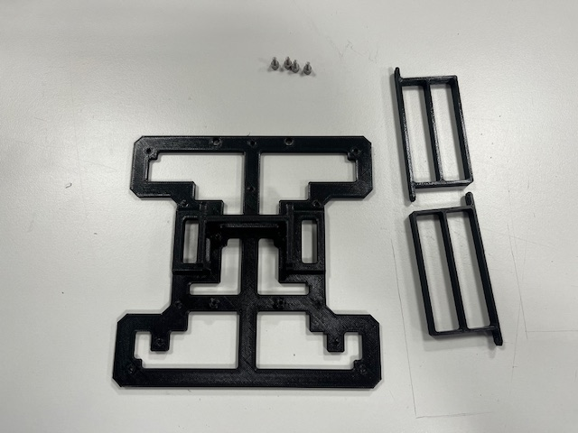
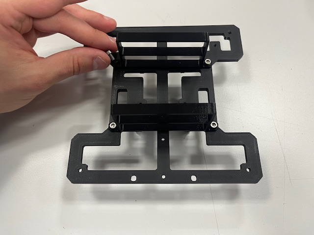
Step 2 - Front Leg mount
- Front leg
- Screw M3x6 (2x)
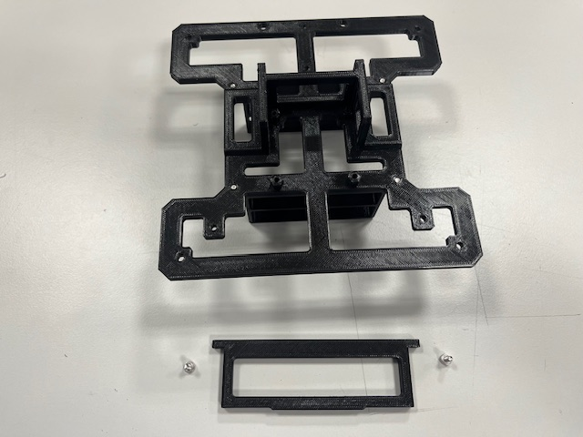
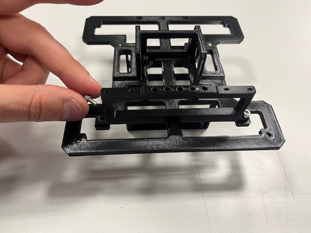
Step 3 - H-Bridge mount
- H-bridge
- screw M3x6 (4x)
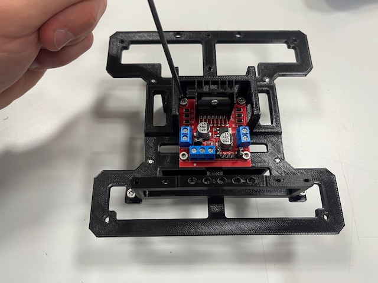
Step 4 - Standoffs
- Standoff (4x)
- Screw M3x6 (4x)
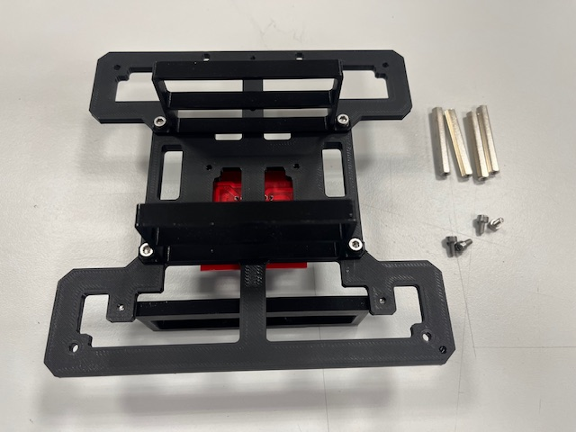
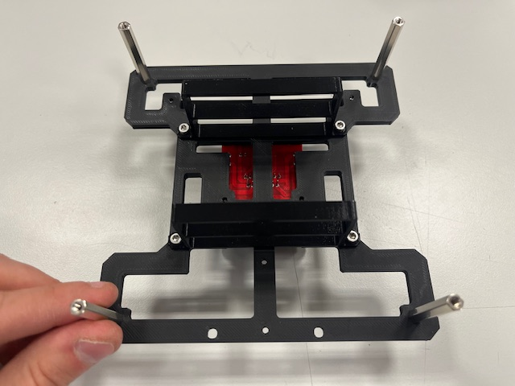
Step 5 - Rear Leg mount
- Rear leg
- Screw M3x6 (2x)
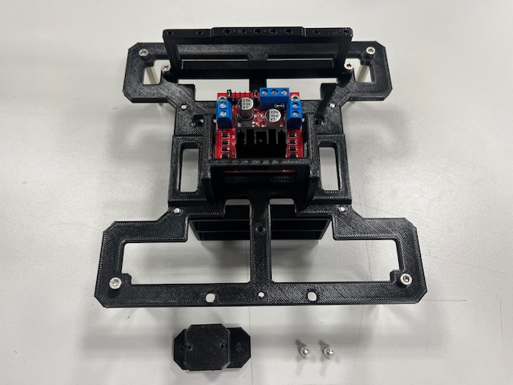
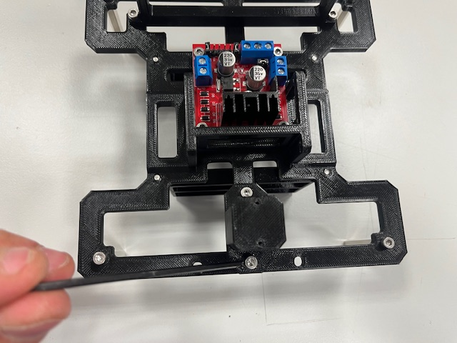
Step 6 - Roller Casters mount
- Roller caster (3x)
- Screw M2x4 (6x)
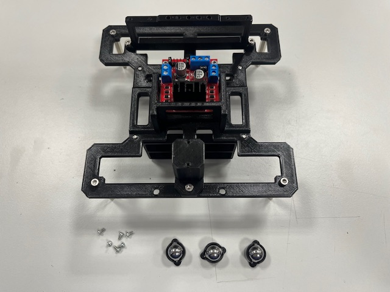
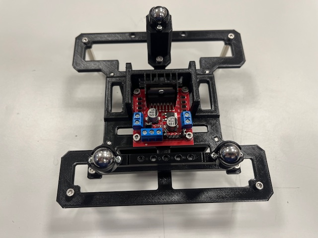
Step 7 - Motors mount
- Motor with 6-wire cable (2x)
- Screw M3x25
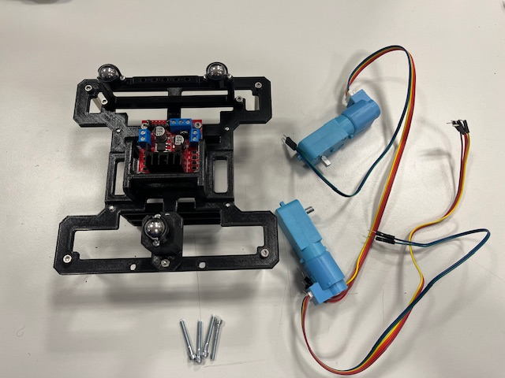
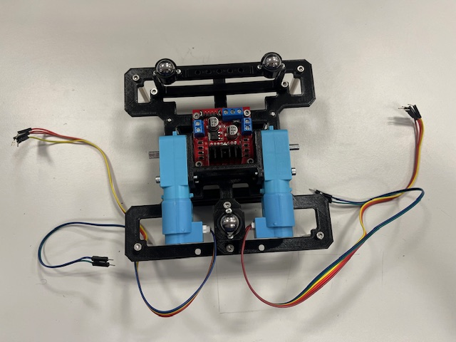
Step 8 - Line Sensors mount
- Line sensor with 3 wires (2x)
- vcc (red)
- gnd (black)
- signal (blue)
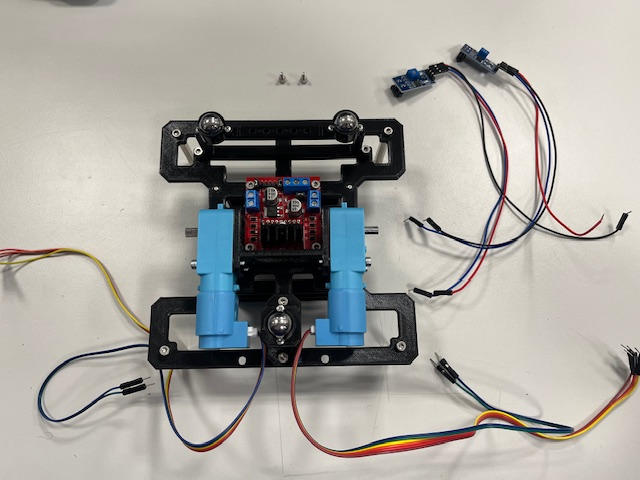
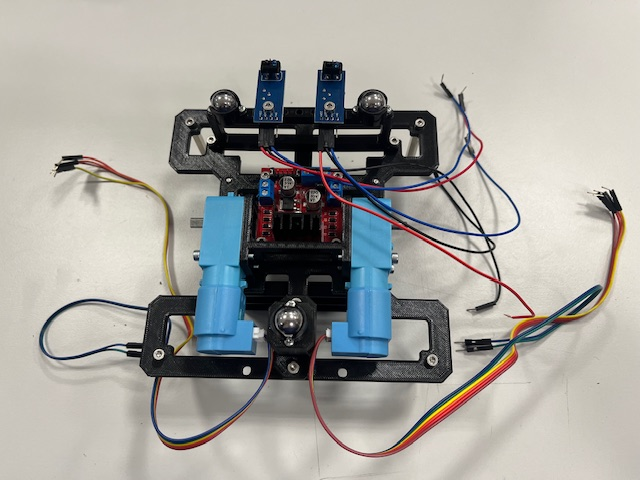
Step 9 - Middle, Switch
- Middle part
- Switch
- USB power delivery module
- Wires (red & black)
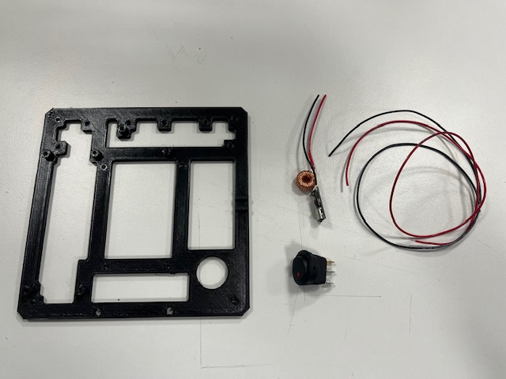
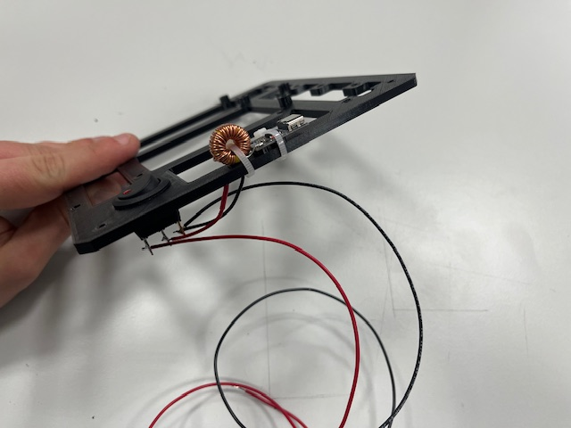
Step 10 - Arduino Board
- Arduino board
- Screw M3x6 (4x)
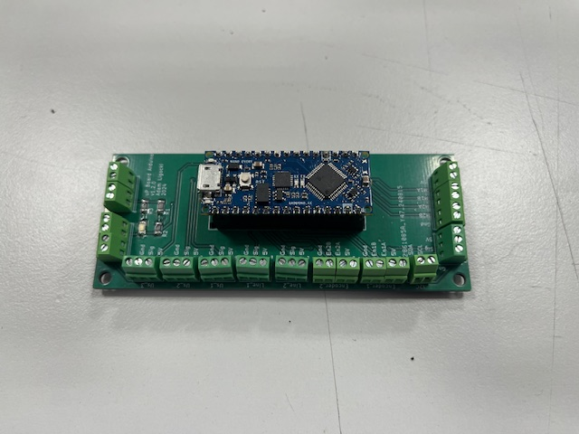
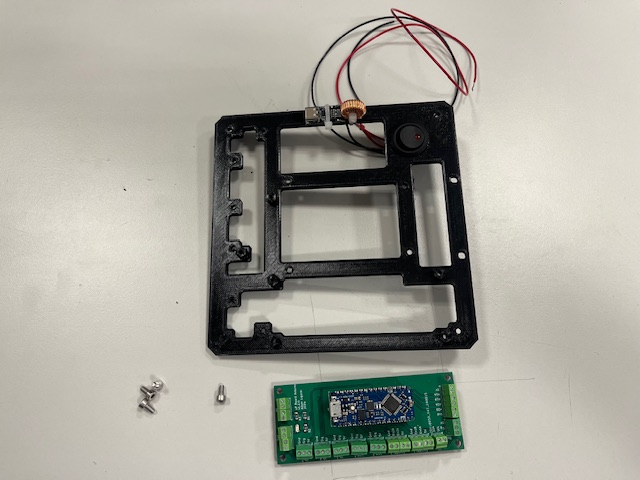
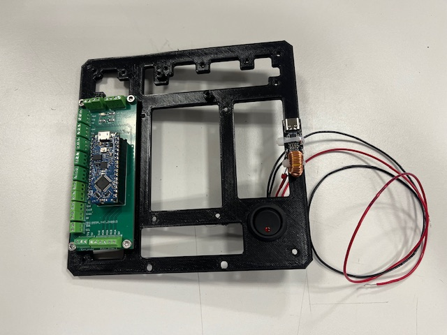
Step 11 - LiDAR Mount
- LiDAR with UART to USB converter and 4 screws
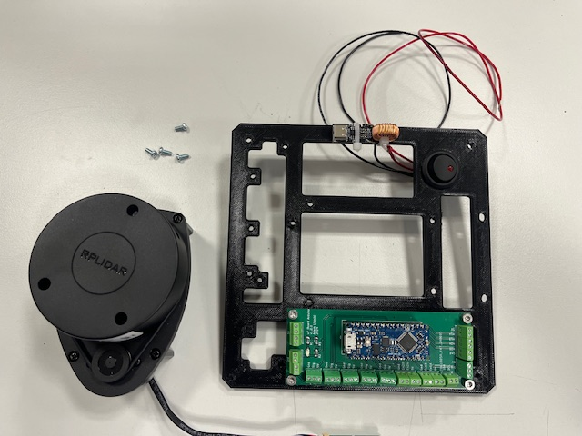
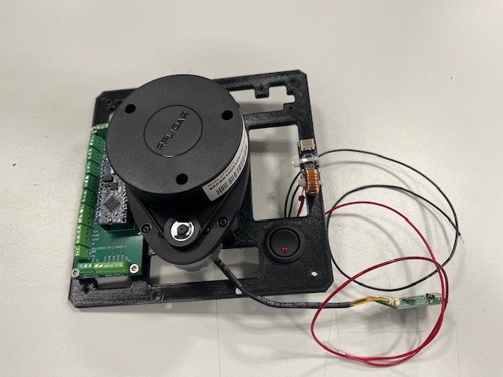
Step 12 - Ultrasound Module assembly
- Ultrasound sensor
- 3 wires
- vcc (red)
- gnd (black)
- signal (blue)
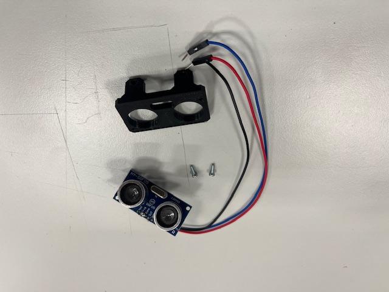
Step 13 - US Modules mount
- Ultrasound module (3x)
- Screw M3x6 (6x)
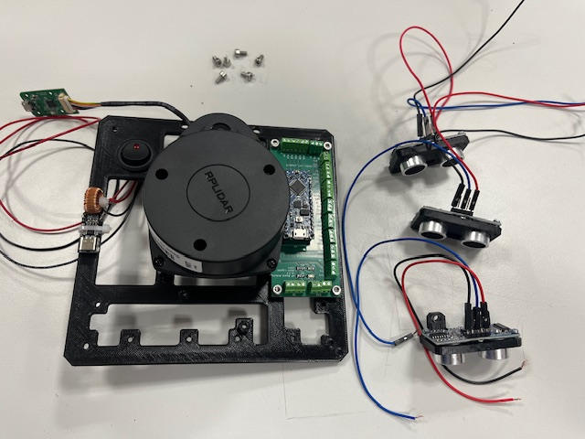
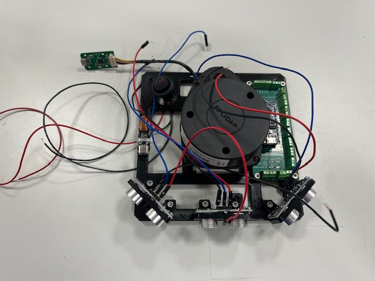
Step 14 - DC/DC Stepup mount
- DC/DC stepup
- Screw M3x6 (2x)
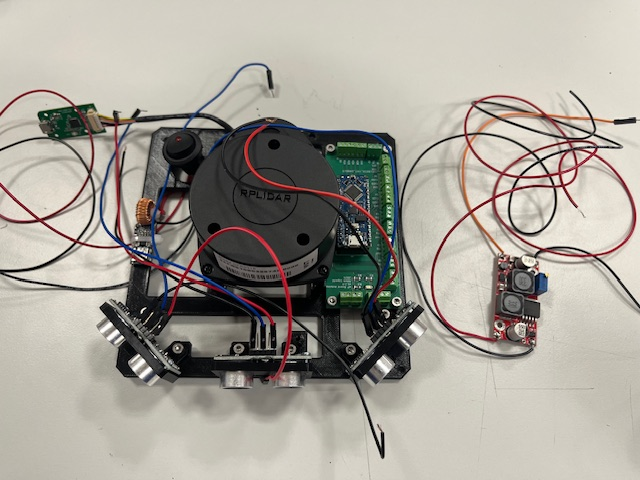
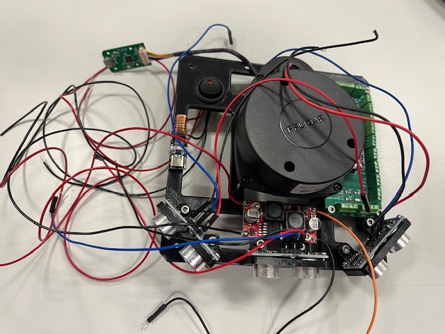
Step 15 - Top, LCD
- Top Part
- LCD mount
- LCD
- Wires
- vcc (red)
- gnd (black)
- sda (green)
- scl (yellow)
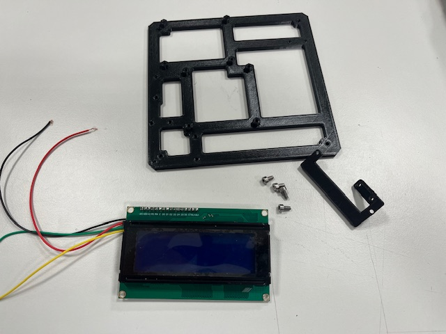
Step 16 - RPi, Camera
- Raspberry Pi 4
- RPi camera v2
- Camera mount
- 4x screw M2x3
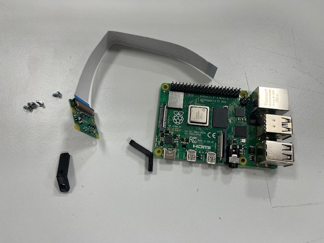
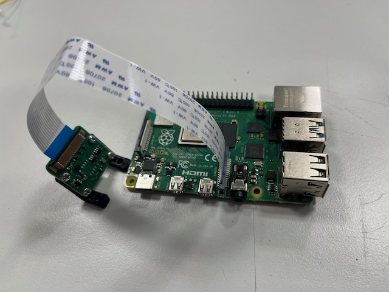
Step 17 - RPi Module mount
- RPi module
Step 18 - Sensor Board mount
- Sensor board
- IMU
- ADC
- RTC
- Magnetometer
- Barometer
Step 19 - RPi Hat mount
- RPi Hat
Step 20 - Bottom Module wires alignment
Step 21 - Mid Module wires alignment
Step 22 - Bot & Mid merge
- Bottom module
- Mid module
- Standoff (4x)
Step 23 - Connecting Encoders to Arduino Board
- Left motor -> encoder 1
- Right motor -> encoder 2
Step 24 - Connecting US modules
- Left US -> us_1
- Center US -> us_2
- Right US -> us_3
Step 25 - Top Module mount
- Top module
- Screw M3x4 (4s)
- Wires (RPi power -> Arduino Board)
- 5V (red)
- gnd (black)
Step 26 - Connecting I2C RPi <-> Aruino Board
- Wires
- sda (green)
- scl (yellow)
Step 27 - Wiring Arduino Board -> H-Bridge
- Left motor
- M1A -> N1 (yellow)
- M1B -> N2 (green)
- Right motor
- M2A -> N3 (yellow)
- M2B -> N4 (green)
Step 28 - Connecting RPi Power to Sensor Board
- vcc 5V (red)
- gnd (black)
- sda (gree)
- scl (yellow)
Step 29 - Power Up
Step 30 - Wheels
- Wheel (2x)
Final
SW Installation and Setup
This chapter just briefly describes the installation and setup the entire robot.
RPi Installation
Required HW
- Raspberry Pi 4B (8GB RAM recommended)
- Micro SD Card (minimal 16GB, 64GB recommended)
- SD Card to USB Adapter
Installation
Install RPi-Imager on your Linux PC
sudo apt install rpi-imager
Run RPi-Imager
rpi-imager
Select Device (Raspberry Pi 4)
Select OS - Others General Purpose OS -> Ubuntu -> Ubuntu Server 22.04.5 LTS (64b)
Select target device (SD Card)
Click Next -> Edit Settings
Setup user, password, WiFi and SSH
Confirm and wait until writing is finished.
Now put the SD card into the RPi and power on.
In case of problems, please visit Official Documentation
OS Configuration
Connect to the Raspberry Pi
ssh <user>@<ip_address>
Run first installation script and reboot afterwards. The script may require user input for confirmation on restarting services Optionaly run script to disable services for faster boot.
sudo bash first_start.sh
sudo bash slow_startup.sh #optional
sudo reboot now
The script will:
- run system update and upgrade some system packages
- modify the boot firmware config
- create a swapfile (can be removed on systems with more RAM)
- add the user to following groups -
video,tty,dialout
The slow_startup.sh will disable this services:
- network wait
- snap and related services
- cloud init and related services
After rebooting the system, run the second script.
sudo bash installation.sh
The script will:
- update system and install necessary packages
- install Python packages
- install ROS 2 and Colcon
- clone
fenrir-projectrepository - build ROS 2 packages
- add services to the system and enable them at startup
If user name is different then "robot", paths in scripts and service files need to be changed, along with the user for one of services.
#in repository
fenrir-project/software/raspberry_pi/prp_root.service
fenrir-project/software/raspberry_pi/prp_user.service
#or after install
/etc/systemd/system/prp_root.service
/etc/systemd/system/prp_user.service
The ROS_DOMAIN_ID can be changed in the *.service files and optionally (but preferably) in ~/.bashrc.
Starting services
Start the necessary services for ROS 2 nodes:
sudo systemctl start prp_root.service
sudo systemctl start prp_user.service
Cloning SD card
Prequisitions:
- Linux OS
- SD card reader
- A SD card with configured system
- An empty SD card of the same size
Example of how to clone a SD card and rename hostname
# Insert the SD card with the existing system
lsblk # Identify the SD card and its partitions (e.g., /dev/sdc1 and /dev/sdc2)
# Unmout the SD card
sudo umount /dev/sdc*
# Create an image of the SD card with the system
sudo dd if=/dev/sdc of=~/Documents/prp/robot.img bs=4M status=progress
sudo eject /dev/sdc
# Swap the SD card with an empty one
lsblk # Identify SD card and its partitions (e.g., /dev/sdc1 and /dev/sdc2)
sudo dd if=~/Documents/prp/robot.img of=/dev/sdc bs=4M status=progress # apply image to the SD card
sudo sync
# Mount the SD card's partitions
sudo mkdir /media/jakub/card1
sudo mount /dev/sdc1 /media/jakub/card1
sudo mkdir /media/jakub/card2
sudo mount /dev/sdc2 /media/jakub/card2
# Replace the old hostname for new one
sudo sed -i 's/prp-red/prp-green/g' /media/jakub/card1/user-data /media/jakub/card2/etc/hostname /media/jakub/card2/etc/hosts
# Unmount SD card and remove created folders
sudo umount /media/jakub/card1
sudo umount /media/jakub/card2
sudo rmdir /media/jakub/card1/
sudo rmdir /media/jakub/card2/
ROS_DOMAIN_ID can be rewritten in files:
~/.bashrc
/etc/systemd/system/prp_user.service
/etc/systemd/system/prp_root.service
Arduino Programming
HW Required
- Host PC with Arduino Studio IDE installed see here.
- Arduino Nano "Every" (Original or clone, Every need for more external interrupts)
- USB cable to connect Arduino with PC
- Arduino PCB for Fenrir Project
Programming
Open the software/arduino_nano/main/main.ino file in the Arduino IDE.
Connect the Arduino Every to the
Try to build the firmware using the "Verify" button in left top.
If build goes ok, try to upload the firmware using the "Upload" button in left top.
Using the ctrl+shift+M open terminal and check if microcontroller communicates.